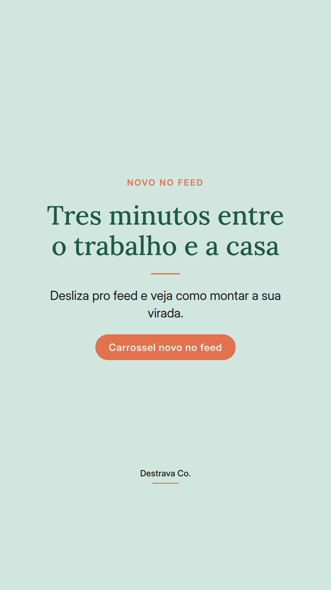
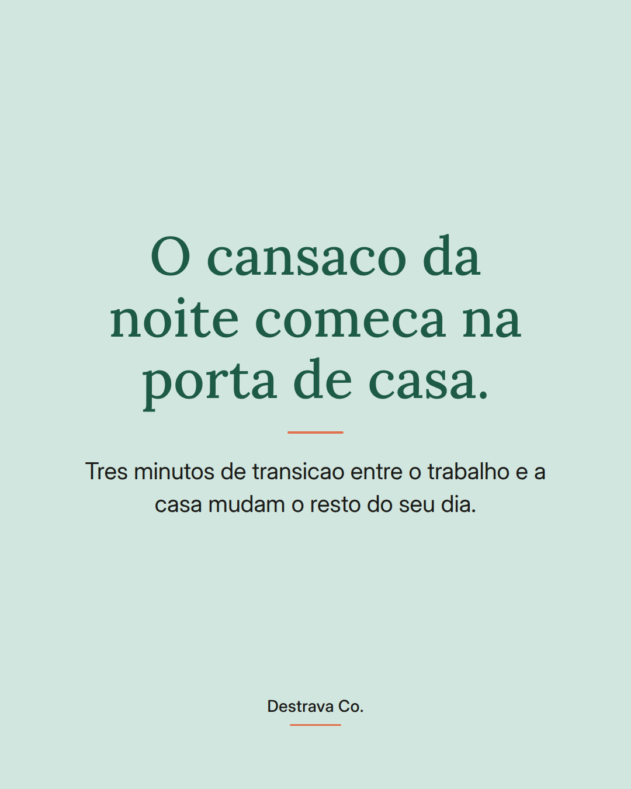
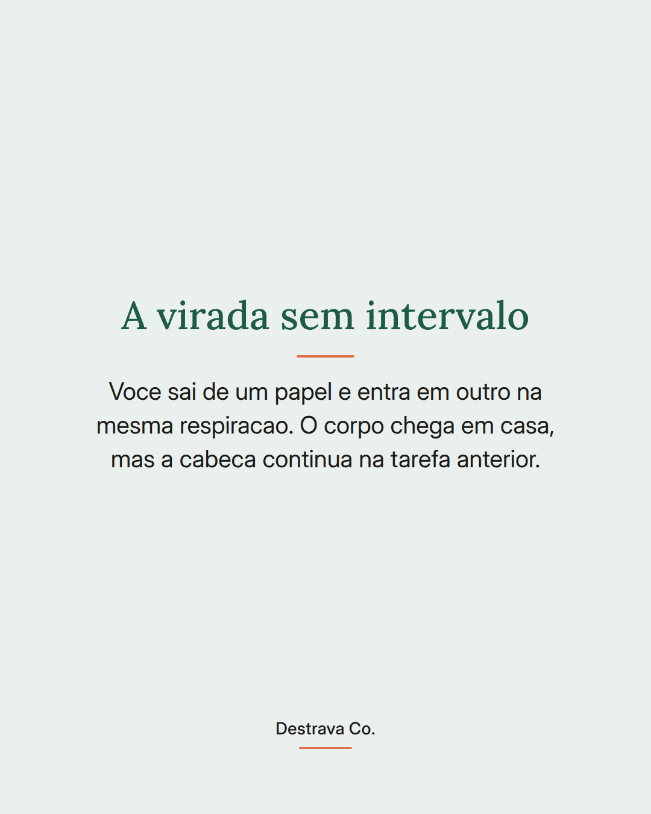
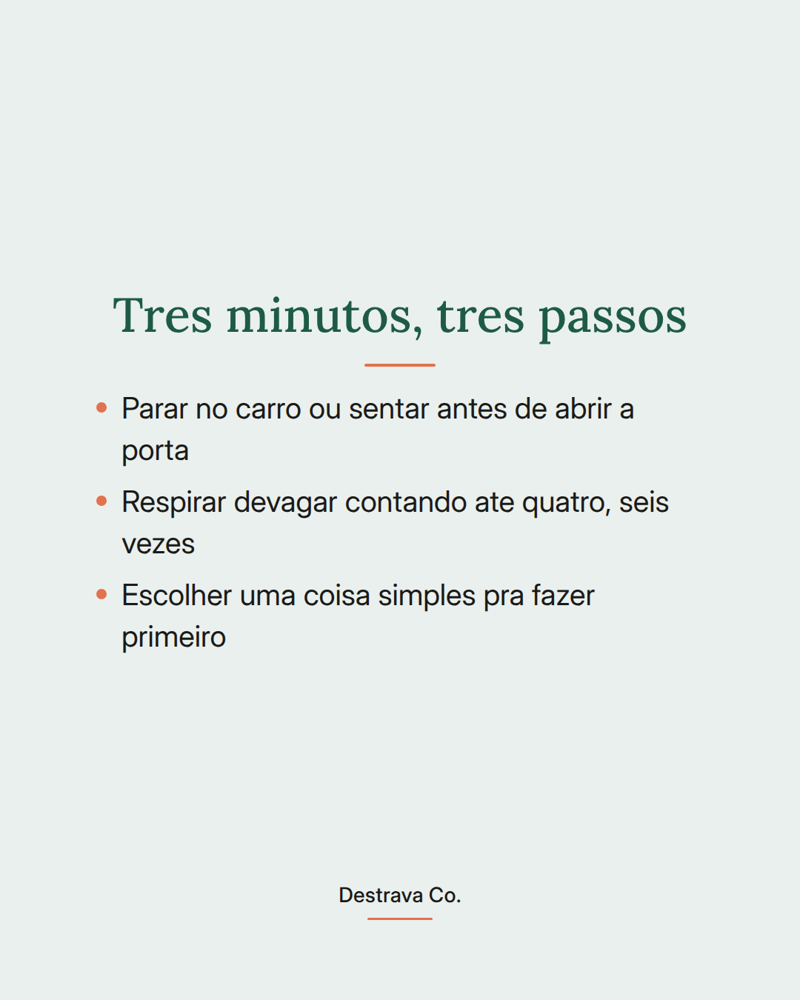
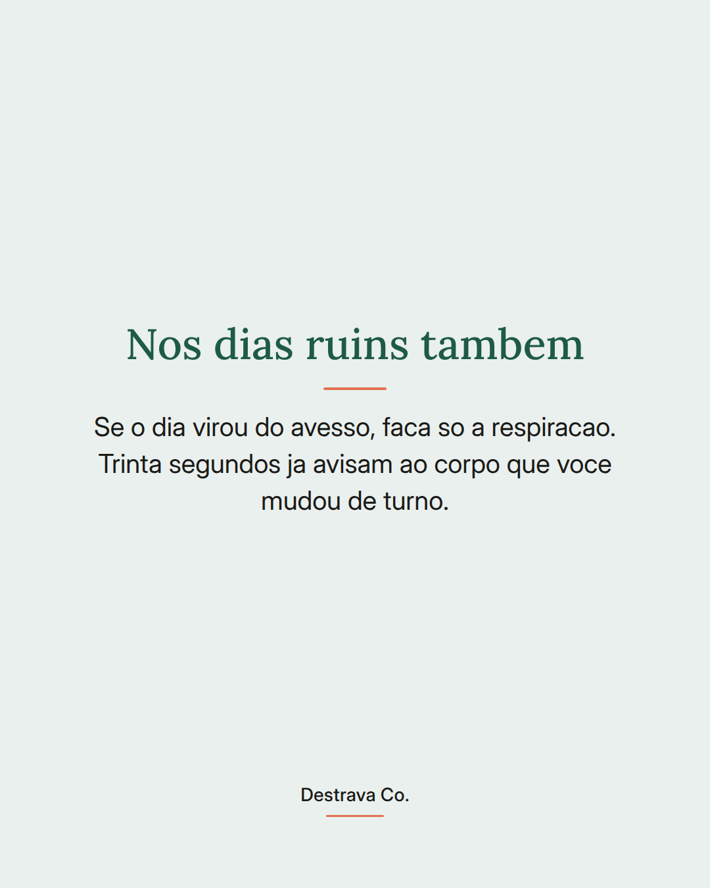

Transicao entre trabalho e casa: tres minutos mudam a noite inteira.
Quando nao existe intervalo entre um papel e outro, voce atravessa a porta ainda resolvendo a ultima tarefa do dia.
O ritual e simples: parar antes de entrar, respirar devagar contando ate quatro por seis vezes e escolher uma unica coisa pra fazer primeiro dentro de casa.
Nos dias em que tudo desandou, fique so na respiracao. Trinta segundos ja sao um aviso ao corpo de que o turno virou.
Salva pra lembrar na saida de hoje e compartilha com uma amiga que chega em casa no piloto automatico. Se quiser construir isso com um passo a passo, o Destrava 21 te acompanha.